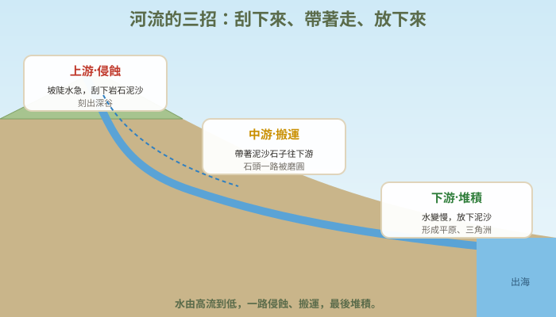
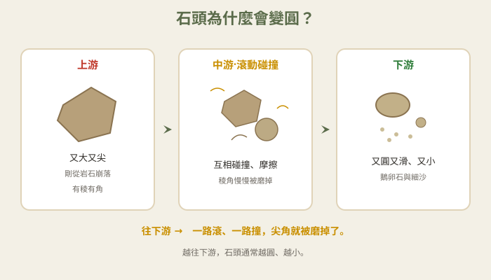
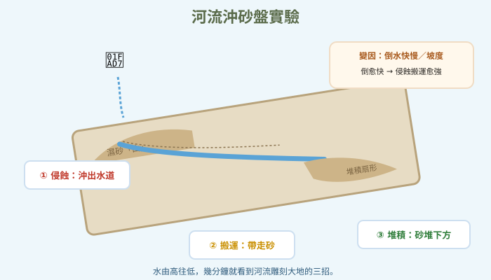

圖一（概念總覽圖）：河流的三招

- 圖像目的
- 用一張圖說明侵蝕、搬運、堆積三種流水作用。
- 圖中應出現的元素
- 上游侵蝕（刮下岩石）、中游搬運（帶著泥沙石子）、下游堆積（放下泥沙），三段標示。
- 必須標示的科學概念
- 侵蝕→搬運→堆積的順序與位置。
- 圖說
- 「河流三招：刮下來、帶著走、放下來。」
- AI 繪圖提示詞
- 溫暖手繪繪本風，一條河從山上流到海，分三段標侵蝕、搬運、堆積，各配小圖示。繁體中文，白底。
- 避免畫錯的提醒
- 侵蝕在上游、堆積在下游；水流方向由高往低。
💡 又細又軟的流水，居然能把堅硬的石頭磨圓、把大地刻出深深的峽谷——河流是最有耐心的雕刻家！
| 適合年級 | 國小四年級 |
|---|---|
| 可銜接年級 | 四年級 → 六年級（變動的大地）→ 國中地表作用 |
| 主題分類 | 地表、岩石與自然資源 |
| 核心概念 | 流水的侵蝕、搬運、堆積；地表會因水流而改變 |
| 關鍵詞 | 河流、侵蝕、搬運、堆積、地形、鵝卵石 |
| 可銜接的國中概念 | 地表作用、風化與侵蝕、河流地形 |
| 建議閱讀時間 | 約 16 分鐘 |
| 適合搭配的課堂活動 | 水流沖砂盤實驗、鵝卵石觀察、上下游石頭比較 |
暑假，小狐同學跟著家人到山裡的溪邊玩水。他在河床上撿石頭，發現一件怪事：溪水裡的石頭幾乎都是圓圓滑滑的，摸起來一點也不刮手，像被人磨過一樣；可是他往山坡上一看，山壁上的石頭卻是尖尖角角、稜稜有邊的。「奇怪，同樣是石頭，為什麼水裡的圓、山上的尖？」
他又注意到，溪水流得急的地方，水色有點混濁，還帶著細細的沙；而在水流變慢、變寬的下游，河邊堆積了好多沙子和小石子，踩上去軟軟的。「這些沙是從哪裡來的？該不會是水從上游『搬』下來的吧？」小狐同學撿起一顆鵝卵石，翻來覆去地看，越看越覺得不可思議。
「水這麼軟，怎麼可能把硬邦邦的石頭磨圓？」他把石頭放進水裡又拿出來，「一定是有人偷偷磨好放在這裡的啦！」正當他這麼想的時候，一陣大水沖過，河床上的小石子被推著往下游滾動，發出「咕嚕咕嚕」的聲音。
黑熊老師剛好也在溪邊，笑著說：「小狐，沒有人偷偷磨石頭喔。這位『雕刻家』就是河流本人！流動的水會慢慢地刮下泥沙、把石頭往下游搬，一路上石頭互相碰撞摩擦，稜角就被磨掉，變得又圓又滑。水看起來很軟，但它日積月累，力量大得能刻出峽谷、堆出平原。我們來看看河流是怎麼雕刻大地的吧！」
黑熊老師，水那麼軟，真的能把石頭磨圓嗎？
能喔！流動的水會帶著泥沙、小石子一起走，這些石子在水裡不停滾動、互相碰撞摩擦，尖角就慢慢被磨掉，變成圓滑的鵝卵石。水一次磨一點點，但幾百幾千年下來，力量非常驚人。
那河邊的沙和小石子，是水從別的地方搬來的嗎？
沒錯。河流雕刻大地有三個動作：先「侵蝕」——把岩石、泥沙刮下來、帶走；再「搬運」——把泥沙石子往下游帶；最後在水流變慢的地方「堆積」——把帶不動的泥沙放下來。侵蝕、搬運、堆積，就是河流的三招。
補一個冷知識！水流「快」的時候力氣大，能搬動大石頭；水流「慢」下來力氣就小，只好把重的先放下、輕的再放下。所以上游常是大石頭、中游是小石子、下游到出海口就變成細細的泥沙。看石頭的大小，就能猜這裡水流快還是慢！
原來如此！那有名的峽谷，也是河流刻出來的嗎？
是的。像太魯閣的峽谷，就是立霧溪長時間向下侵蝕岩石，一點一點刻深的。河流上游坡陡水急，侵蝕力強，容易刻出又深又窄的峽谷；到了下游坡緩水慢，堆積作用強，容易形成平坦的平原。
哼，石頭那麼硬，河流那麼軟，一定是石頭本來就長這樣！山和平原從古到今都沒變過啦，河流哪有那麼厲害～
迷思怪獸，大地其實一直在改變，只是很慢，我們不容易察覺！自然環境中的砂石和土壤，會因為水流和風而慢慢改變。有些改變快（像大雨後土石崩落），有些很慢（像峽谷要幾萬年）。你做個沖砂實驗，幾分鐘就能看到水把砂子刻出溝、堆到下游——眼見為憑！
我懂了，河流是很有耐心的雕刻家。那我怎麼觀察它的作品？
我們來做「河流沖砂盤」！在盤子裡堆斜坡的濕砂，從高處慢慢倒水，觀察水怎麼把砂沖出溝（侵蝕）、把砂往下帶（搬運）、堆在下面（堆積）。還可以比較「倒水快」和「倒水慢」的差別。玩水記得地面別滑倒、把水擦乾喔！
流動的水會慢慢改變大地，它有三個動作：①侵蝕——把岩石、泥沙刮下來、帶走；②搬運——把泥沙、石子往下游帶；③堆積——在水流變慢的地方，把帶不動的泥沙放下來。石子在水裡一路滾動、互相摩擦，尖角被磨掉，就變成圓圓的鵝卵石。水流快力氣大、能搬大石頭；水流慢力氣小，所以上游多大石頭、下游多細沙。河流就像很有耐心的雕刻家，能刻出峽谷、堆出平原。
河流是重要的地表作用力量，透過侵蝕、搬運、堆積三種作用改變地形。侵蝕：流水沖刷、磨蝕河床與河岸，把岩石碎屑帶走；搬運：水流挾帶泥沙石礫向下游移動，途中顆粒因碰撞摩擦而變圓、變小；堆積：當水流速度變慢、搬運力下降，較重的顆粒先沉積、較輕的後沉積。因此上游坡陡水急，侵蝕強、河谷深窄（如峽谷）；下游坡緩水慢，堆積強，形成沖積平原、三角洲。砂石與土壤會因水流、風而改變，這些改變有些快、有些慢，說明地表並非固定不變。
河流的侵蝕、搬運、堆積是外營力作用的一環，與風化共同塑造地表。搬運能力與流速密切相關（流速越快，可搬運的顆粒越大、越多）。上游以下切侵蝕為主，形成 V 形谷、峽谷、瀑布；中下游以側蝕與堆積為主，形成曲流、氾濫平原、三角洲。地表作用是「動態平衡」的過程，改變速率有快有慢（暴雨山崩迅速、峽谷形成極慢）。國中地球科學「地表的變化」「岩石與地層」會延伸探討外營力、內營力與地形演育。



（本篇分鏡場景插圖籌備中，以下為分鏡腳本；場景圖可依提示詞產出，作法同其他文章。）
| 適合年級 | 四年級 |
|---|---|
| 材料 | 大托盤或烤盤、乾淨的砂（或細土）、水杯或寶特瓶、書本（墊高做斜坡）、抹布、紀錄表 |
倒水的快慢／水量大小（也可改成斜坡的陡緩）。
沖出水道的深淺、被搬走的砂量、下方堆積的多少。
同一盤砂、砂的種類與濕度、斜坡高度、起始砂堆形狀、倒水位置。
| 倒水方式 | 水道深淺 | 搬走的砂 | 下方堆積 |
|---|---|---|---|
| 慢慢倒 | |||
| 快快倒 |
倒水後，水會在砂上沖出一條條水道（侵蝕），把砂往下帶（搬運），並在斜坡底部堆成扇形（堆積）——這正是河流雕刻大地的三招縮小版。倒水又快又多時，水流力氣大，侵蝕更深、搬走更多砂、堆積也更多；倒得慢時作用就比較輕微。這說明水流越快，侵蝕與搬運的能力越強，也讓我們理解為什麼上游水急多大石、下游水緩多細沙。真實的河流用同樣的方式，只是花了成千上萬年，刻出峽谷、堆出平原。
⚠️ 安全提醒：在戶外或鋪好防水墊的地方進行，隨時把濺出的水擦乾，避免地面濕滑跌倒；使用玻璃容器要小心，勿把砂水弄入眼睛與口中；實驗後洗手、整理環境。
👾 迷思說法：水那麼軟，不可能改變硬邦邦的石頭和大地。
為什麼容易誤解：覺得軟的東西贏不了硬的東西。
✅ 正確說法：流動的水靠日積月累的侵蝕、搬運，加上挾帶的砂石不斷摩擦，就能磨圓石頭、刻出峽谷。關鍵是「時間」與「持續」，不是一次的力氣大小。
可以怎麼驗證：做沖砂盤實驗，幾分鐘就看到水把砂沖出溝、搬到下游。
👾 迷思說法：溪裡的圓石頭，本來就長成圓的。
為什麼容易誤解：只看到結果，沒看到過程。
✅ 正確說法：石頭原本多是有稜角的，是在被水搬運的途中互相碰撞、摩擦，稜角被磨掉才變圓的。所以越往下游，石頭通常越圓、越小。
可以怎麼驗證：比較同一條河上游和下游的石頭，上游多稜角、下游多圓滑。
👾 迷思說法：河邊的沙是憑空出現，或一直都在那裡。
為什麼容易誤解：沒想到沙會「移動」。
✅ 正確說法：河邊的沙大多是河流從上游侵蝕、搬運下來，在水流變慢處堆積而成的。沙其實一直在被搬運與堆積。
可以怎麼驗證：大雨後觀察溪水變混濁（帶沙），以及下游沙洲的增減。
👾 迷思說法：山和平原從古到今都沒有變過。
為什麼容易誤解：大地變化很慢，一輩子不容易察覺。
✅ 正確說法：地表一直在改變。砂石與土壤會因水流、風而改變，有些改變快（大雨土石流），有些很慢（峽谷要幾萬年）。
可以怎麼驗證：比較同一地點不同時間的照片，或觀察大雨後河岸、沙洲的變化。
👾 迷思說法：河流只會「破壞」，不會「建造」。
為什麼容易誤解：只注意到侵蝕（沖走東西）。
✅ 正確說法：河流會侵蝕，也會堆積。它把泥沙帶到下游堆積，形成肥沃的沖積平原和三角洲，是人類重要的耕地與居住地。
可以怎麼驗證：觀察大河下游的平原（如嘉南平原），是河流堆積形成的。
1. 河流把岩石、泥沙「刮下來、帶走」的作用叫做？
(A) 侵蝕 (B) 搬運 (C) 堆積 (D) 蒸發
答案：A。侵蝕是刮下並帶走岩石泥沙。
2. 溪裡的石頭又圓又滑，主要是因為？
(A) 本來就長圓的 (B) 被水搬運途中碰撞摩擦磨圓 (C) 有人磨的 (D) 太陽曬圓的
答案：B。搬運途中互相摩擦，稜角被磨掉。
3. 為什麼上游多大石頭、下游多細沙？
(A) 上游石頭比較多 (B) 水流快能搬大石、水流慢只能留細沙 (C) 下游的人喜歡細沙 (D) 沒有原因
答案：B。流速越快搬運力越強；水變慢後大顆粒先沉積。
4. 河流在水流變慢的地方「把泥沙放下來」，這是？
(A) 侵蝕 (B) 搬運 (C) 堆積 (D) 凝結
答案：C。堆積作用形成沙洲、平原、三角洲。
5. 關於大地的改變，下列何者正確？
(A) 大地從不改變 (B) 只會很快改變 (C) 砂石土壤會因水流、風改變，有快有慢 (D) 只有地震才會改變
答案：C。地表持續改變，速率有快有慢。
1. 河流雕刻大地的三個作用是什麼？請依「從上游到下游」的順序寫出。
侵蝕（刮下帶走）、搬運（往下游帶）、堆積（水慢時放下泥沙）。
2. 為什麼看石頭的大小，可以猜出這裡水流的快慢？
因為水流越快，搬運力越強，能留住較大的石頭；水流慢的地方只留得住細沙。所以大石頭處水流較快，細沙處水流較慢。
3. 河流除了「破壞」（侵蝕），還會為人類帶來什麼好處？
河流的堆積作用會在下游形成肥沃的沖積平原與三角洲，提供耕地與居住地；也帶來水資源。
1. 你在一條河撿了兩顆石頭：一顆有稜角、一顆很圓滑。你覺得哪一顆比較可能來自上游、哪一顆走了比較遠的路？為什麼？
圓滑的石頭比較可能走了較遠的路（從上游被搬運到下游），因為一路碰撞摩擦把稜角磨掉了；有稜角的比較可能剛從上游岩石崩落、還沒被磨多久。可藉此推論「越圓＝搬運越久越遠」。
2. 有人在河的上游蓋了水壩，把大部分泥沙擋住了。你覺得下游的沙洲、海邊沙灘可能會發生什麼變化？為什麼？
下游會因為「補充的泥沙變少」，沙洲和海灘可能逐漸縮小、後退（海岸侵蝕）。因為原本要靠河流搬運下來的泥沙被水壩攔住，堆積補充不足，海浪又持續侵蝕，沙就越來越少。這說明侵蝕與堆積需要平衡。（合理即可）
| 向度 | 待加強（1） | 通過（2） | 優秀（3） |
|---|---|---|---|
| 概念理解 | 認為大地不變 | 能說出侵蝕搬運堆積 | 能連結流速、地形與變化速率 |
| 探究能力 | 未控制變因 | 能控制變因完成沖砂實驗 | 能由結果推論真實河流現象 |
| 態度 | 忽視安全 | 遵守玩水安全與整理 | 主動關心河川海岸議題 |
| 檢核項目 | 結果 | 備註 |
|---|---|---|
| 科學概念是否正確 | ✅ | 侵蝕搬運堆積、流速與搬運力、石頭磨圓、地表改變有快慢，敘述正確。太魯閣峽谷為立霧溪侵蝕屬已知地理事實。 |
| 是否符合年級理解程度 | ✅ | 四年級以溪邊石頭與沖砂實驗切入。 |
| 是否有錯誤或過度簡化的比喻 | ✅ | 「河流是雕刻家」比喻恰當，強調時間累積而非一次力氣。 |
| 是否清楚區分觀察、推論與解釋 | ✅ | 由石頭圓滑觀察推論搬運，再以實驗驗證。 |
| 圖像提示詞是否可能造成誤解 | ✅ | 已提醒侵蝕在上游、堆積在下游、下游石頭更圓更小。 |
| 實驗是否安全 | ✅ | 防滑、擦乾、玻璃小心、勿入眼口，安全低成本。 |
| 是否需要補充資料來源 | ✅ | 對應 INd-Ⅱ-5、INd-Ⅱ-1、INc-Ⅱ-9；見教師補充。 |
| 是否適合轉成 HTML 網頁 | ✅ | 結構完整，含互動測驗與摺疊區。 |